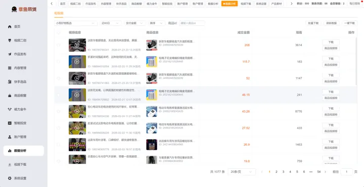

数据分析
按播放量、成交金额和发布时间排序，快速找出可复投的内容和商品。
「快手数据分析软件哪个好」这句搜索，多数人心里想的其实是另一句话：发了一堆视频，到底哪条该复投、哪个商品该加、哪个号该停。这一页讲清章鱼带货的数据分析能回答哪些问题、数据怎么回到动作上，以及它明确不负责什么。
| 项目 | 说明 |
|---|---|
| 能做什么 | 按账号和时间分析短视频播放、成交金额、商品表现和爆款素材复投机会；支持按播放量、成交金额和发布时间排序。 |
| 输入 | 已绑定的账号、要看的账号范围与时间范围。 |
| 输出 | 可排序的作品与商品表现列表，用来判断哪些内容值得复投、哪些商品在跑、哪个账号的数据在掉。 |
| 限制 | 数据来自你自己绑定的账号，不含行业大盘和竞品数据；指标口径与归因以平台为准，同一个数字在这里和平台后台未必同名同义。 |
| 失败提示 | 最常见的误判不是数据错，而是时间范围选错：跨天数据没跑完就下结论，会把还在起量的视频判成「不行」。看之前先确认时间窗口。 |
「数据分析」这四个字太笼统，实际上团队每天问的是四类不同的问题，对应的看法也不一样。
第一类是内容层面：哪条视频播放起得快，哪条发出去两天还是零。这看的是播放量和发布时间。第二类是生意层面：哪条真的带来了成交金额，而不是只有播放。这看的是成交金额，而不是播放。第三类是商品层面：同一个品，不同视频的表现差多少，值不值得继续给它做素材。第四类是素材层面：已经跑出量的那条，能不能换个结构再做一批——资料里把这叫「爆款素材复投机会」。
四类问题用同一张表看会打架：播放高的不一定成交好，成交好的可能只有一条。所以比较「哪个好」的时候，先问自己主要回答哪一类，再去看工具能不能按这个维度排序和切分。章鱼带货的数据分析支持按账号和时间切，再按播放量、成交金额和发布时间排序，这三条正好覆盖前三类问题。

按播放量、成交金额和发布时间排序，快速找出可复投的内容和商品。
同一条内容在不同账号上的表现分开看。
爆款素材找出来，再走一轮二创和发布。
报表最大的浪费不是数据不准，是看完没人动。所以判断一套数据分析好不好，还要看它的结论能不能顺手接上下一步。这套工具里，下一步有三个方向。
第一个方向是复投：找出跑出量的素材，回到视频二创做一批同结构的新成片，再用作品发布排队发出去。资料里把「爆款素材复投机会」写进了数据分析的定位，说明这条路径是被设计过的。
第二个方向是内容调整：播放起不来、或者发出后挂车出问题的，回到内容管理处理。内容管理支持集中查看已发作品、开启监控、设置播放增量提醒和挂车检测，异常能早一点看到。
第三个方向是投放：内容数据好的，去智能投放按账户和日期看花费、成交、订单和投入产出比，把预算往有效的地方挪；投放数据又反过来解释为什么某条内容成交高。三个方向连起来，才是一个闭环。
反过来说，如果一套工具只能看不能改，那它只是个仪表盘。要判断值不值，就看你从「看到一条数据」到「做出一个动作」中间要点几下。
还有一个实操提醒：别拿「今天的数据」和「昨天的数据」直接比。发布时间不同、账号不同、投放不同，三个变量一起动，结论一定是错的。要比较，就先锁定两个变量。
看它能不能按账号和时间切、能不能同时看播放与成交、能不能排序找出值得复投的内容。只给总播放数的报表，对矩阵团队没用。
不能。数据来自你自己绑定的账号，资料里没有行业大盘和竞品追踪的能力。
先确认时间窗口。跨天还没跑完的数据最容易误判：一条还在起量的视频，会被看成「不行」。另外，比较时至少锁定账号和时间范围两个变量。
内容管理管的是「已发作品」这个对象：监控、分享、删除、同框、挂车检测、播放增量提醒。数据分析管的是「表现」：播放、成交金额、商品表现和排序。一个管单条，一个管对比。
能，资料里写明商品表现是分析维度之一，并且可以按成交金额排序，用来决定哪个品继续做素材。
别看总数。锁一个账号、一周时间，按成交金额排序，挑出前三名，看它们的共同点是什么——同一个品、同一种开头、还是同一个时长。找到共同点，再回去做第二批。